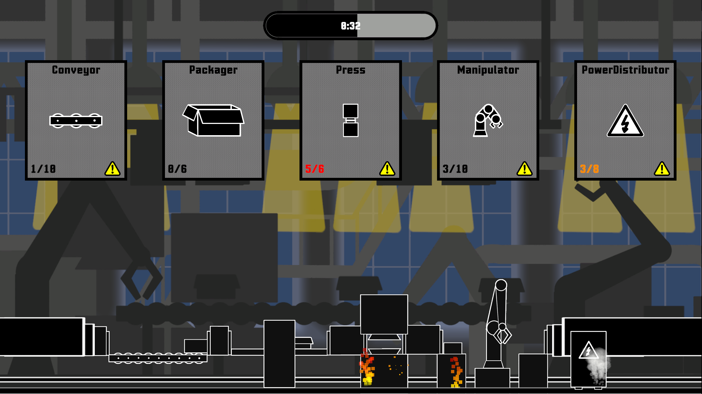
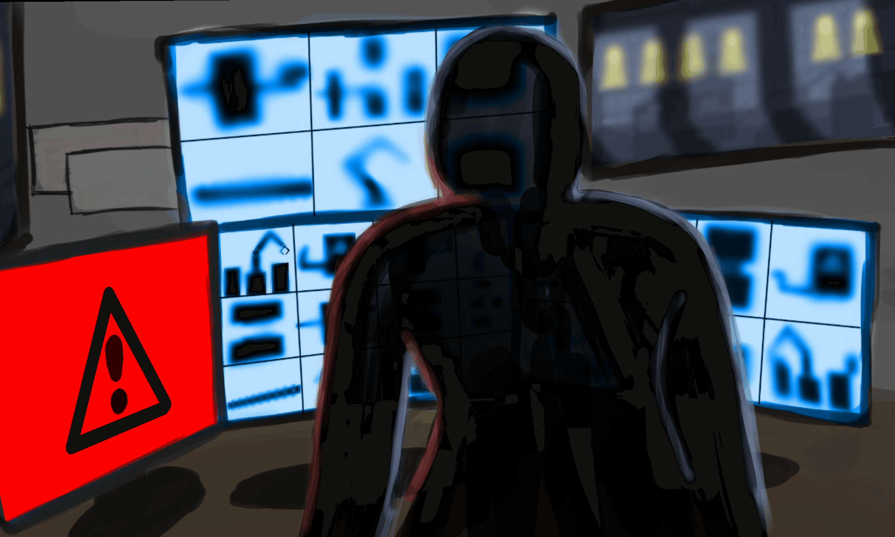

01 / Game jam · 2025
Factory
Collapse.
A rhythm-based factory game developed in one week for a game jam. The project focused on delivering a complete game experience, including its setting, narrative, gameplay, progression and visual feedback.



Keeping the factory running
The game puts the player in charge of several factory stations at once. Machines fill up, problems appear and the player has to move between them quickly enough to keep the line running. Because the game was made in one week, the main challenge was keeping the scope manageable while still connecting the different systems into one complete experience.
My contributions
- Full software implementation.
- Complete gameplay implementation.
- Level and progression systems.
- Save and load system.
- Dialogue and monologue system.
- Damage and particle feedback.